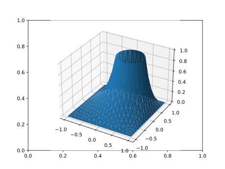

Meshes from Gmsh
MultiGridBarrier's own constructors (fem2d_P1, fem2d, fem3d, …) build meshes of simple domains. For real geometry — CAD shapes, holes, local refinement, named boundary parts — use Gmsh, the standard open-source mesh generator. The MultiGridBarrierGmshExt extension loads automatically when both packages are imported and provides gmsh_import, which converts the current Gmsh mesh (or a .msh/.geo file) into a Geometry plus named node sets:
- 3/6-node triangles →
fem2d_P1/fem2d_P2(curved P2 edges supported), - quadrilaterals → tensor
fem2dof any order (curved; non-planar quad meshes become embedded surfaces), - hexahedra →
fem3dof any order.
Gmsh physical groups come back as (vertex, element) node-pair lists — the same format as find_boundary — so named boundary parts plug directly into amg's dirichlet_nodes, and named subdomains into the JuMP front end's On.
Add the Gmsh package (pkg> add Gmsh) and load it (using Gmsh: gmsh). Gmsh itself is GPL-licensed; as an opt-in weak dependency it is only ever loaded if you load it.
Example: square with a hole, mixed boundary conditions
Script the geometry through the gmsh API (or gmsh.open a .geo/.msh file), name the boundary parts, mesh, and import:
using MultiGridBarrier, PyPlot
using Gmsh: gmsh
gmsh.initialize()
gmsh.option.setNumber("General.Terminal", 0)
sq = gmsh.model.occ.addRectangle(-1.0, -1.0, 0.0, 2.0, 2.0)
hole = gmsh.model.occ.addDisk(0.3, 0.2, 0.0, 0.4, 0.4)
gmsh.model.occ.cut([(2, sq)], [(2, hole)])
gmsh.model.occ.synchronize()
# name the two boundary parts: the circle and the outer square
circle = Int[]; outer = Int[]
for (d, t) in gmsh.model.getEntities(1)
xmin, ymin, _, xmax, ymax, _ = gmsh.model.getBoundingBox(d, t)
if xmin > -0.9 && xmax < 0.9 && ymin > -0.9 && ymax < 0.9
push!(circle, t)
else
push!(outer, t)
end
end
gmsh.model.addPhysicalGroup(1, outer, -1, "outer")
gmsh.model.addPhysicalGroup(1, circle, -1, "hole")
gmsh.option.setNumber("Mesh.MeshSizeMax", 0.12)
gmsh.model.mesh.generate(2)
gm = gmsh_import()
gmsh.finalize()
length(gm.geometry.w) # number of quadrature nodes1881The named parts drive per-region Dirichlet conditions exactly like hand-built node sets: here u = 0 on the outer square and u = 1 on the hole, with the p-Laplace energy (p = 1.5):
mg = amg(gm.geometry; dirichlet_nodes = Dict(:dirichlet => sort(vcat(gm.regions["outer"], gm.regions["hole"]))))
onhole = Set(gm.regions["hole"])
V, N = size(gm.geometry.x, 1), size(gm.geometry.x, 2)
gvals = zeros(V * N)
for (v, e) in gm.regions["hole"]
gvals[v + (e - 1) * V] = 1.0
end
xf = reshape(gm.geometry.x, :, 2)
sol = mgb_solve(assemble(mg; p = 1.5,
g_grid = [gvals fill(100.0, V * N)],
f = x -> (0.0, 0.0, 0.0, 1.0)); verbose = false)
Curved elements, any order
High-order meshes import as isoparametric elements: call setOrder(k) before importing. Triangles are P2 (setOrder(2)); quadrilaterals support any order — the geometry is resampled at MultiGridBarrier's Chebyshev reference nodes, so a curved Q_k element imports exactly regardless of k. Boundary nodes lie on the true geometry. For all-quad meshes set Mesh.RecombineAll = 1 (with Mesh.SubdivisionAlgorithm = 1 to guarantee no leftover triangles); for hexahedra use transfinite/swept volumes, or subdivide a tet mesh with Mesh.SubdivisionAlgorithm = 2. Hexahedra also import at any order. Order-≥3 triangles (MultiGridBarrier has only P1/P2 triangles), serendipity (incomplete high-order) elements, and tetrahedra are rejected with actionable messages.
The example below imports a curved fifth-order disk and checks the disk area — the curved-boundary quadrature converges as the order rises:
gmsh.initialize()
gmsh.model.occ.addDisk(0.0, 0.0, 0.0, 1.0, 1.0)
gmsh.model.occ.synchronize()
gmsh.model.addPhysicalGroup(1, [t for (d, t) in gmsh.model.getEntities(1)], -1, "circle")
gmsh.option.setNumber("Mesh.MeshSizeMax", 0.25)
gmsh.option.setNumber("Mesh.RecombineAll", 1)
gmsh.option.setNumber("Mesh.SubdivisionAlgorithm", 1)
gmsh.model.mesh.generate(2)
gmsh.model.mesh.setOrder(5) # curved Q5 quads
gmd = gmsh_import()
gmsh.finalize()
gmd.geometry.discretization.k, sum(gmd.geometry.w) - π # order, and disk-area error(5, -4.654054919228656e-12)API reference
MultiGridBarrier.gmsh_import — Function
gmsh_import(path::AbstractString; verbose=false, T=Float64) -> (; geometry, regions)
gmsh_import(; verbose=false, T=Float64) -> (; geometry, regions)Import a Gmsh mesh as a MultiGridBarrier Geometry (requires using Gmsh, which loads the MultiGridBarrierGmshExt extension). The first form opens a .msh/.geo file; the zero-argument form reads the current Gmsh model (script your geometry through the gmsh API, call gmsh.model.mesh.generate(dim), then gmsh_import()).
Returns a named tuple:
geometry::Geometry— ready foramg(geometry). The FEM family is chosen from the mesh's elements: 3-node triangles →fem2d_P1, 6-node triangles →fem2d_P2(isoparametric, curved edges supported),(k+1)²-node quadrilaterals → tensorfem2dof any order k,(k+1)³-node hexahedra →fem3dof any order k. High-order quad/hex geometry is obtained by resampling each element at MultiGridBarrier's reference nodes, so curved elements of any order import correctly. Quadrilateral surface meshes with non-planar coordinates become embedded 2-manifolds (ambient = Val(3)). The mesh must consist of a single element type; serendipity (incomplete high-order) elements, order-≥3 triangles (MultiGridBarrier has only P1/P2 triangles), tetrahedra, prisms and pyramids are rejected with instructions (e.g.Mesh.SecondOrderIncomplete = 0, orMesh.SubdivisionAlgorithm = 2to turn tetrahedra into hexahedra).regions::Dict{String,Vector{Tuple{Int,Int}}}— one entry per Gmsh physical group, mapping its name to the(vertex, element)node pairs of the volume mesh that lie on the group. This is the same format asfind_boundary, so entries plug directly intoamg'sdirichlet_nodesand the JuMP front end'sOn:
using MultiGridBarrier, Gmsh
gm = gmsh_import("domain.msh")
mg = amg(gm.geometry; dirichlet_nodes = Dict(:dirichlet => gm.regions["clamped"]))
sol = mgb_solve(assemble(mg; p = 1.5))Physical groups of the volume dimension select subdomains (useful with On); lower-dimensional groups select boundary/interface node sets. Unnamed groups get the key "dim<d>_tag<t>". Element connectivity is taken from the Gmsh node tags (shared nodes glue exactly; no coordinate tolerance), and elements with negative orientation are flipped automatically.